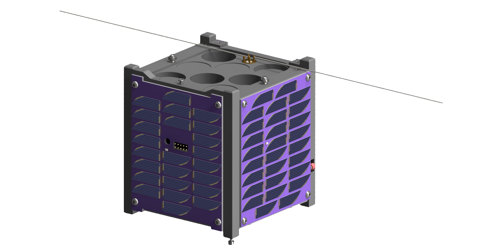
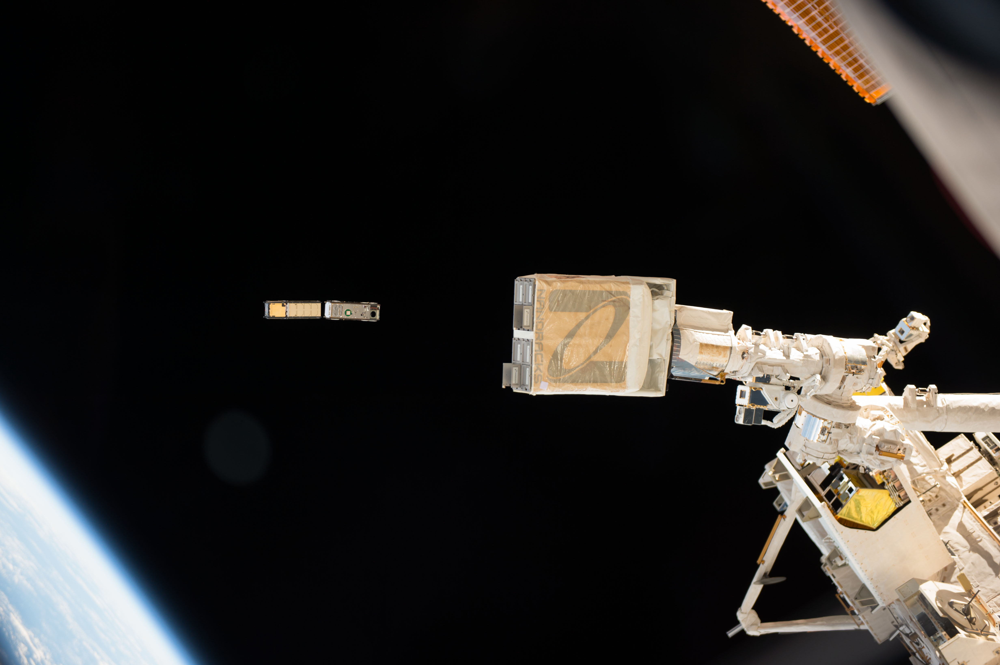

Radiation from cosmic rays and solar energetic particles is one of the most significant challenges to any future manned missions beyond the protection of Earth's magnetic field.
Robotic space missions have shown that astronauts will exceed their career radiation limits on a typical mission to Mars lasting roughly 500 days, leading to increased risks of cancer and other serious health issues.
In order to undertake such missions, spacecraft will need to adequately mitigate the radiation astronauts recieve during the voyage.
However, many materials usually considered for the role of shielding against radiation are typically too massive to be practical (such as lead), or are consumables (such as liquid hydrogen, food, or water) secondarily used as radiation mitigation.
Lighter, more permanent materials are needed that can protect astronauts while being more versatile in their application on the spacecraft.
Representations of the three natural forms of radiation encountered in space (Left to Right): Solar energetic particles (pictured: coronal mass ejection, NASA); Galactic Cosmic Rays, or GCRs (pictured: GCR collision with Earth's atmosphere, NSF); Trapped particle radiation (pictured: Earth's Van Allen Belts, NASA)
LEOPARDSat-1 is a CubeSat mission to study the effectiveness of lightweight carbon-based composites in shielding against ionizing radiation.
To do this, the satellite will measure the difference in radiation dose between sensors partially protected by varying thicknesses of such materials and those which are left unprotected.
This data will help inform the spaceflight community on the viability of using these materials for future missions.
As this is UC Cubecats' first satellite mission, it will also serve as opportunity for our members to gain experience in the design, construction, testing, and launch of space systems.
The LEOPARDSat-1 mission hardware is a 1U CubeSat (10 cm x 10 cm x 11.35 cm) with an expected mass of roughly 1 kilogram.
Within the structural frame are five PC104-format boards, with the Payload Assembly mounted on the +Z (top) face of the satellite.

CAD rendering of LEOPARDSat-1 in its operational configuration
Attitude Determination & Control Subsystem
LEOPARDSat-1 will use a Passive Magnetic Attitude Control System (PMACS) to control its orientation on orbit, utilizing a permanent magnet to align with Earth's magnetic field and two bars of hysteresis material to dampen out the transient response.
For this mission, the PMACS will keep the satellite pointed to within 15° of the local magnetic field vector after a week long period of "detumbling" post-deployment.
Although PMACS can not set the satellite to a commanded orientation and is not as precise as an active control system, neither of these are required for the objectives of LEOPARDSat-1 and the passive approach requires no power or computational resources to orient the satellite.

Schematic of the LEOPARDSat-1 Attitude Determination and Control Subsystem (ADCS)
An Inerital Measurement Unit (IMU), containing a 3-axis Gyroscope and 3-axis Magnetometer, will measure the angular rates and local magnetic field, while an array of photodiodes will be used to roughly determine the relative pointing direction of the Sun.
Although this data is not needed for attitude control, they will be sent down to the ground for processing in order to assess the PMACS's performance and contextualize data from the payload sensors.
Communication Subsystem
LEOPARDSat-1 will communicate with the Ground Station over an half-duplex link in the amateur 70 centemeter (UHF) frequency band .
The subsystem consists of a single transciever and a deployable dipole antenna located at the top of the satellite.
When not downlinking data or handling uplink commands, the communication subsystem will act as a amateur radio repeater*.
*Repeater details will be published closer to the mission's launch date.
On-Board Computing Subsystem
The main computer on board will be an STmicroeletronics STM32L152RE microprocessor, which will be responsible for data management, operational mode handling, and command of other onboard devices.
All software on the satellite (programmed in C/C++) will operate on this device.
Data collected from the various onboard sensors will be stored on a microSD card, for later transmission to the ground once in range of Cincinnati.
Payload Subsystem
Sixteen Radiation Field Effect Transistors (RADFETs), a type of Metal-Oxide-Semiconductor Field Effect Transistor (MOSFET), will be used to measure the radiation doses on orbit.
These are separated into three groups to characterize the effectiveness of the selected composite material:
- Six unshielded RADFETs act as a reference, monitoring the ionizing radiation that passes through the CubeSat’s aluminum frame.
- Six RADFETs are shielded with 3.5 mm Carbon-Carbon/High-Density Polyethylene (C-C/HDPE) composite samples
- Four RADFETs are shielded with 7 mm thick C-C/HDPE composite samples
Power Subsystem
The power subsystem provides power generation, power storage, and power distribution for the satellite.
Electrical power will be generated using a solar array consisiting of five individual panels, one mounted to each face of the CubeSat other than the Z+ face containing the payload assembly.
These panels will be manufactured by UC CubeCats using Trisolx GaAs solar cells, with a total of 136 cells in the full array.
Power generated by these solar panels will be stored in a battery consisting of two 18650 Lithium Ion cells.
The battery will be mounted to a custom-design power distribution board, which contains battery chargers, battery monitors, and DC-DC converters to deliver the required voltages and peak/nominal current draws to each subsystem.
Structure Subsystem
LEOPARDSat-1's structure will use a custom 1U exterior frame, consisting of four launch rails and two end plates, all made from anodized Aluminum 6061.
The rails are smooth, for either forwards or backwards deployment, and contain several deployment specific mechanisms:
- One roller deployment switch on the +Y face of one rail, to disable the power subsystem for safety between launch and deployment.
- Two pusher deployment switches on the -Z ends of two rails, also to disable the power subsystem.
- Two separation springs on the -Z ends of the two remaining rails, to provide clean separation from other satellites upon deployment.
Internally, the structure will utilize standoffs to properly space and firmly hold the PC104 subsystem boards to the exterior frame, while the solar panels and the payload assembly are mounted direcrtly to the end plates.
CAD model of the exterior structural frame
LEOPARDSat-1 was selected by the ninth round of NASA's CubeSat Launch Intiative (CSLI) in 2018.
It is currently scheduled to launch to the International Space Station in late 2025 or early 2026, where it will be deployed into orbit using the NanoRacks CubeSat Deployer (NRCSD) (now operated by Voyager Technologies).
Mission Parameters
- Launch Vehicle: TBA (Falcon 9/Dragon 2 or Antares/Cygnus)
- Launch Date: NET Q4 2025
- Deployment Date: 3-6 months after launch
- Orbital Altitude: ~420 km
- Orbital Inclination: 51.6°
- Mission Duration: 4 months (nominal)

CubeSats being deployed from the NRCSD on the ISS (image: NASA)
Operations
Upon deployment from the NRCSD, LEOPARDSat-1 will deploy its antenna and begin detumbling to cancel any residual spining imparted by deployment, eventually aligning with the local magnetic field.
After successfully detumbling (a process which will take about one week), the satellite will listen for a signal from the ground and then respond that the satellite is functional.
The team will then command the satellite to enter its main operational state, in which it will begin collecting data and transmitting it to the ground when in communication range of the ground station (which should occur 2-4 times a day).
Radiation doses from each RADFET sensor will be measured once every 30 minutes, while data on its attitude state and solar intensity in each direction will be recorded at a much higher frequency (0.1667 Hz) to help reconstruct the satellite's attitude history.
The mission will nominally last four months, but may be extended if the satellite continues to function.
Due to the mission's low orbit, reentry into Earth's atmosphere is expected to occur within two years of deployment from the ISS, at which point the satellite will be destroyed.
NASA - NASA Announces Ninth Round of Candidates for CubeSat Space Missions (archived), March 2, 2018
UC Magazine - This Cat is Ready to Roar, March 2, 2018
WVXU - These UC Students Want To Help NASA Get To Mars, March 2, 2018
The Cincinnati Enquirer - These UC Bearcats are Heading to Space. (OK, their Experiments are.), March 7, 2018
WCPO-TV - How University of Cincinnati Students are Helping NASA Get to Mars, March 7, 2018
The News Record - CubeCats Satellite is a Go for Launch, March 9, 2018